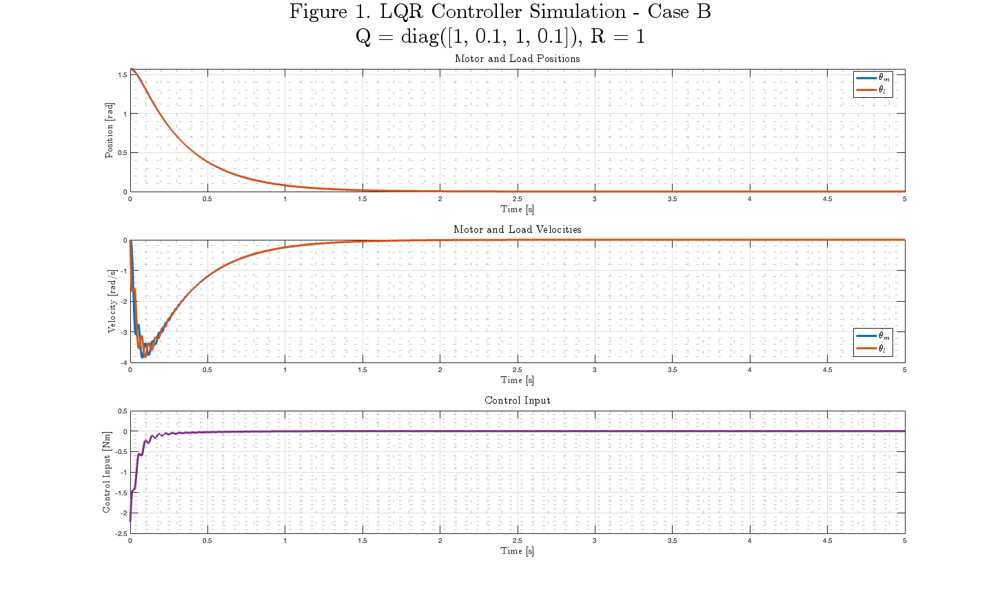

ROB599_HW6_P1
Analyzing LQR controller of a series elastic actuator
Contents
- Clean Up
- Problem 1A: Define the State Space of the System
- Problem 1B: Solve LQR with Q = [1, 0.1, 1, 0.1] and R = 1
- Problem 1C: Solve LQR with Q = [1, 0.1, 1, 0.1] and R = 0.1
- Problem 1D: Solve LQR with Q = [5, 0.1, 5, 0.1] and R = 0.1
- Problem 1E: Simulate the System with LQR Controller for 1B, 1C, and 1D
Clean Up
clear
clc
close all
Problem 1A: Define the State Space of the System
% Define System Variables syms Jm Jl Bm Bl k syms k1 k2 k3 k4 % Define the Numerical Values of the System Parameters Jm_val = 0.0097; % kg*m^2 Jl_val = 0.0097; % kg*m^2 Bm_val = 0.04169; % Ns/m Bl_val = 0.04169; % Ns/m k_val = 100; % Nm/rad % State Space Representation of the System A = [0, 1, 0, 0; -k/Jl, -Bl/Jl, k/Jl, 0; 0, 0, 0, 1; k/Jm, 0, -k/Jm, -Bm/Jm]; B = [0; 0; 0; 1/Jm]; K_m = [k1, k2, k3, k4]; As_cl = collect(A - B*K_m, Jm) % Substitude numerical values for the system parameters A_val = eval(subs(A, [Jm, Jl, Bm, Bl, k], [Jm_val, Jl_val, Bm_val, Bl_val, k_val])); B_val = eval(subs(B, [Jm, Jl, Bm, Bl, k], [Jm_val, Jl_val, Bm_val, Bl_val, k_val]));
As_cl = [ 0, 1, 0, 0] [ -k/Jl, -Bl/Jl, k/Jl, 0] [ 0, 0, 0, 1] [(k - k1)/Jm, (-k2)/Jm, (- k - k3)/Jm, (- Bm - k4)/Jm]
Problem 1B: Solve LQR with Q = [1, 0.1, 1, 0.1] and R = 1
% Define Weighting Matrices Q_b = diag([1, 0.1, 1, 0.1]); R_b = 1; % Solve for the LQR controller [K_b, S_b, e_b] = lqr(A_val, B_val, Q_b, R_b); % Display the LQR controller K_b
K_b = -3.2737 0.0307 4.6879 0.3973
Problem 1C: Solve LQR with Q = [1, 0.1, 1, 0.1] and R = 0.1
% Define Weighting Matrices Q_c = diag([1, 0.1, 1, 0.1]); R_c = 0.1; % Solve for the LQR controller [K_c, S_c, e_c] = lqr(A_val, B_val, Q_c, R_c); % Display the LQR controller K_c
K_c = -36.5581 0.0901 41.0302 1.2991
Problem 1D: Solve LQR with Q = [5, 0.1, 5, 0.1] and R = 0.1
% Define Weighting Matrices Q_d = diag([5, 0.1, 5, 0.1]); R_d = 0.1; % Solve for the LQR controller [K_d, S_d, e_d] = lqr(A_val, B_val, Q_d, R_d); % Display the LQR controller K_d
K_d = -36.0517 0.1392 46.0517 1.3350
Problem 1E: Simulate the System with LQR Controller for 1B, 1C, and 1D
% Define Simulation Parameters x0 = [pi/2; 0; pi/2; 0]; tspan = [0 5]; % Define the Closed Loop Systems for all cases A_cl_b = A_val - B_val*K_b; A_cl_c = A_val - B_val*K_c; A_cl_d = A_val - B_val*K_d; % Simulate all systems [t_b, x_b] = ode45(@(t, x) A_cl_b*x, tspan, x0); [t_c, x_c] = ode45(@(t, x) A_cl_c*x, tspan, x0); [t_d, x_d] = ode45(@(t, x) A_cl_d*x, tspan, x0); % Create figures for each case controllers = {'b', 'c', 'd'}; Q_values = {'Q = diag([1, 0.1, 1, 0.1])', 'Q = diag([1, 0.1, 1, 0.1])', 'Q = diag([5, 0.1, 5, 0.1])'}; R_values = {'R = 1', 'R = 0.1', 'R = 0.1'}; t_data = {t_b, t_c, t_d}; x_data = {x_b, x_c, x_d}; K_data = {K_b, K_c, K_d}; for i = 1:length(controllers) % Create figure with specific size fig = figure('Position', [100, 100, 1900, 1400]); set(fig, 'Color', 'white'); % Plot the state variables subplot(3, 1, 1) plot(t_data{i}, x_data{i}(:, 1), 'LineWidth', 3, 'Color', [0 0.4470 0.7410]) hold on plot(t_data{i}, x_data{i}(:, 3), 'LineWidth', 3, 'Color', [0.8500 0.3250 0.0980]) xlabel('Time [s]', 'Interpreter', 'latex', 'FontSize', 14, 'FontWeight', 'bold') ylabel('Position [rad]', 'Interpreter', 'latex', 'FontSize', 14, 'FontWeight', 'bold') legend({'$\theta_m$', '$\theta_l$'}, 'Interpreter', 'latex', 'FontSize', 14, 'Location', 'best') title('Motor and Load Positions', 'Interpreter', 'latex', 'FontSize', 16, 'FontWeight', 'bold') grid on grid minor box on % Plot the state velocities subplot(3, 1, 2) plot(t_data{i}, x_data{i}(:, 2), 'LineWidth', 3, 'Color', [0 0.4470 0.7410]) hold on plot(t_data{i}, x_data{i}(:, 4), 'LineWidth', 3, 'Color', [0.8500 0.3250 0.0980]) xlabel('Time [s]', 'Interpreter', 'latex', 'FontSize', 14) ylabel('Velocity [rad/s]', 'Interpreter', 'latex', 'FontSize', 14, 'FontWeight', 'bold') legend({'$\dot{\theta}_m$', '$\dot{\theta}_l$'}, 'Interpreter', 'latex', 'FontSize', 14, 'Location', 'best', 'FontWeight', 'bold') title('Motor and Load Velocities', 'Interpreter', 'latex', 'FontSize', 16, 'FontWeight', 'bold') grid on grid minor box on % Plot the control input subplot(3, 1, 3) plot(t_data{i}, -K_data{i}*x_data{i}', 'LineWidth', 3, 'Color', [0.4940 0.1840 0.5560]) xlabel('Time [s]', 'Interpreter', 'latex', 'FontSize', 14, 'FontWeight', 'bold') ylabel('Control Input [Nm]', 'Interpreter', 'latex', 'FontSize', 14, 'FontWeight', 'bold') title('Control Input', 'Interpreter', 'latex', 'FontSize', 16, 'FontWeight', 'bold') grid on grid minor box on % Adjust overall figure appearance with Q and R information sgtitle({['Figure ' num2str(i) '. LQR Controller Simulation - Case ' upper(controllers{i})], ... [Q_values{i} ', ' R_values{i}]}, ... 'Interpreter', 'latex', 'FontSize', 30, 'FontWeight', 'bold') % Save the plot with high resolution saveas(gcf, ['Figure' num2str(i) '_LQR_Controller_Simulation_Case1' upper(controllers{i}) '.png']) end